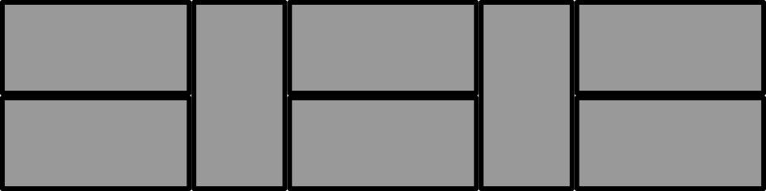
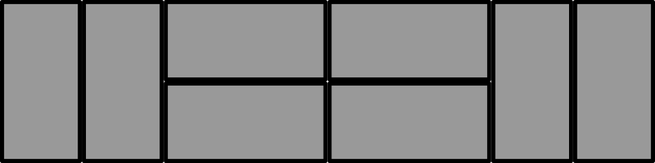
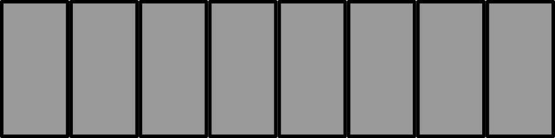
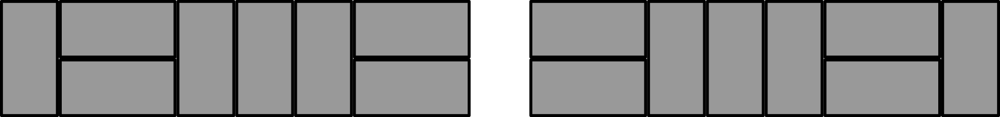
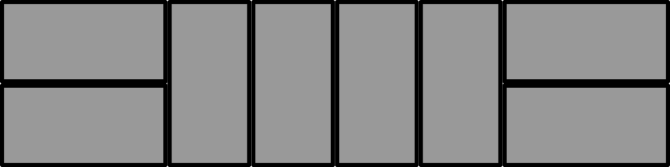
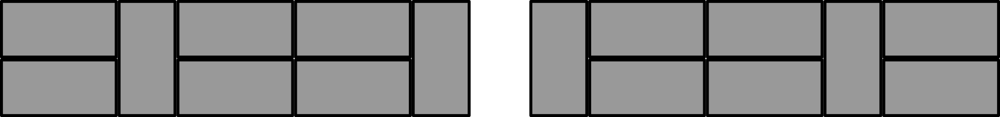
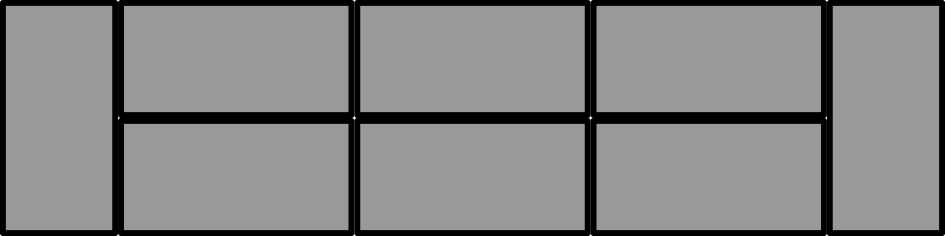
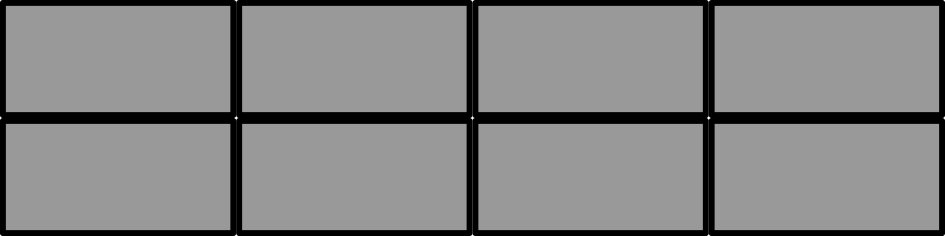

Problem of the Week
Problem D and Solution
Another Path Using Math
A landscaper needs to fill a path measuring 2 feet by 8 feet with patio stones. The patio stones are each 1 foot by 2 feet, so the landscaper calculates that she will need 8 of them.
Before arranging the patio stones, the landscaper wants to look at all her options. She can not cut or overlap the stones, and they all must fit inside the path area without any gaps. Two possible arrangements of the stones are shown below. How many different arrangements are there in total?
 
Solution
Let’s consider the ways that the patio stones can be arranged. We will imagine we are looking at the path from the side, just like in the images shown in the question. First, notice that there must always be an even number of patio stones that have a horizontal orientation, because they must be placed in pairs.
All patio stones are vertical (and none are horizontal)
This can be done in only one way.

Six patio stones are vertical and two are horizontal
There could be 0, 1, 2, 3, 4, 5, or 6 vertical stones to the right of the horizontal stones. So there are 7 ways that six patio stones are vertical and two are horizontal. The first 2 of these ways are shown.
Four patio stones are vertical and four are horizontal
We need to consider sub cases:
Case 1: There are no vertical stones between the horizontal stones.
There could be 0, 1, 2, 3, or 4 vertical stones to the right of the horizontal stones. So there are 5 ways that four patio stones are vertical and four are horizontal when there are no vertical stones between the horizontal stones. The first 2 of these ways are shown.
Case 2: There is one vertical stone between the horizontal stones.
There could be 0, 1, 2, or 3 vertical stones to the right of the rightmost horizontal stones. So there are 4 ways that four patio stones are vertical and four are horizontal when there is one vertical stone between the horizontal stones. The first 2 of these ways are shown.
Case 3: There are two vertical stones between the horizontal stones.
There could be 0, 1, or 2 vertical stones to the right of the rightmost horizontal stones. So there are 3 ways that four patio stones are vertical and four are horizontal when there are two vertical stones between the horizontal stones. The first 2 of these ways are shown.
Case 4: There are three vertical stones between the horizontal stones.
There could be 0 or 1 vertical stones to the right of the rightmost horizontal stones. So there are 2 ways that four patio stones are vertical and four are horizontal when there are three vertical stones between the horizontal stones.

Case 5: There are four vertical stones between the horizontal stones.
There cannot be any vertical stones to the right of the rightmost horizontal stones, because they are all in between the horizontal stones. So there is 1 way that four patio stones are vertical and four are horizontal when there are four vertical stones between the horizontal stones.

Two patio stones are vertical, six are horizontal
Case 1: There are no horizontal stones between the vertical stones.
There could be 0, 2, 4, or 6 horizontal stones to the right of the rightmost vertical stone. So there are 4 ways that two patio stones are vertical and six are horizontal when there are no horizontal stones between the vertical stones. The first 2 of these ways are shown.
Case 2: There are two horizontal stones between the vertical stones.
There could be 0, 2, or 4 horizontal stones to the right of the rightmost vertical stone. So there are 3 ways that two patio stones are vertical and six are horizontal when there are two horizontal stones between the vertical stones. The first 2 of these ways are shown.
Case 3: There are four horizontal stones between the vertical stones.
There could be 0 or 2 horizontal stones to the right of the rightmost vertical stone. So there are 2 ways that two patio stones are vertical and six are horizontal when there are four horizontal stones between the vertical stones.

Case 4: There are six horizontal stones between the vertical stones.
There cannot be any horizontal stones to the right of the rightmost vertical stone, because they are all between the vertical stones. So there is 1 way that two patio stones are vertical and six are horizontal when there are six horizontal stones between the vertical stones.

All patio stones are horizontal
This can be done in only one way.

Therefore, the total number of different arrangements of the patio stones is \(1+7+(5+4+3+2+1) + (4+3+2+1)+1 = 34.\)